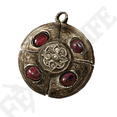

ЭФФЕКТ
Увеличивает максимум ОЗ
ВЕС
0.3
ИМЯ:
Медальон с багровым янтарём
ОПИСАНИЕ:
Медальон, инкрустированный багровым янтарём. Увеличивает максимум ОЗ.
Твёрдая смола Древа Эрд превращается в янтарь, что высоко ценили во времена Годфри, первого повелителя Элдена.
Хранит первобытную энергию жизни.
МЕСТОНАХОЖДЕНИЕ:
Можно выбрать в качестве начальной реликвии.
Продаёт Торговец-кочевник (Бастион замка Морн).
ЭФФЕКТ
Сильно повышает макс. вес снаряжения
ВЕС
1.5
ИМЯ:
Склад великого кувшина
ОПИСАНИЕ:
Амулет, напоминающий большой кувшин, набитый оружием.
Сильно увеличивает максимальный вес снаряжения.
Великий кувшин дарует этот талисман своим воинам. Чем тяжелее ноша, тем крепче мышцы.
МЕСТОНАХОЖДЕНИЕ:
Звёздные пустоши. Награда за победу над тремя Рыцарями великого кувшина.
ЭФФЕКТ
Увеличивает максимум выносливости
ВЕС
0.3
ИМЯ:
Медальон с зелёным янтарём
ОПИСАНИЕ:
Медальон, инкрустированный зелёным янтарём. Увеличивает максимальную выносливость.
Затвердевшая старая смола Древа Эрд превращается в янтарь, что высоко ценили во времена Годфри, первого повелителя Элдена.
Хранит первобытную энергию жизни.
МЕСТОНАХОЖДЕНИЕ:
Ведущая к гробнице пещера. Награда за убийство босса Миранда Смертоцвет.